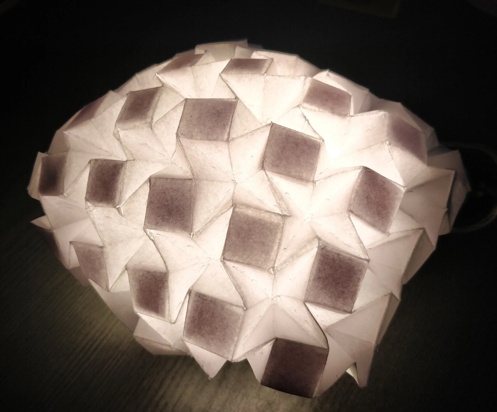
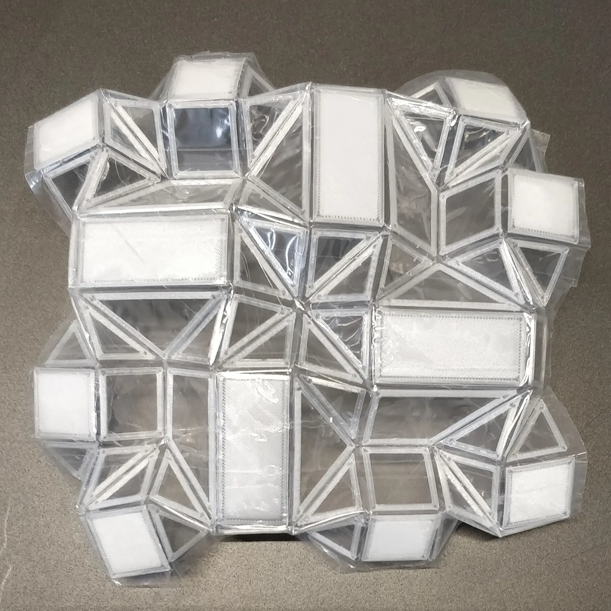

Project 03
2021
University of technology Eindhoven
University of technology Eindhoven
Summary
Project 3 was a design research project with an explorative mindset. Looking into ways of creating shape shifting materials in the context of the automotive industry, a creative
exploration was considered to find out how to create shape shifting materials that could even more clearly
indicate the intention of autonomous omnidirectional vehicles.
Roles
• CAD modeling
• 3D printing innovation
• Ideation
• Folding structures research
• origami research
• 3D printing innovation
• Ideation
• Folding structures research
• origami research
Origami explorations
In the first stage of the hands-on research various origami shapes and structures were being explored

3D printing innovation
After defining the concept of a shape shifting vehicle and exploring origami and other options as a solution, the focus for me became to find out if this would actually could be something which would be producable.

This is just a sidequest you had to hide text as easter eggs which looks like a line